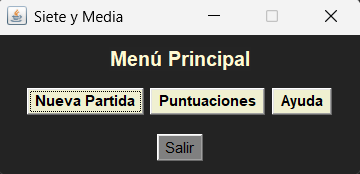
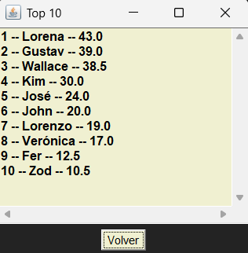

Puntuaciones (Top10)
Desde el menú principal pulsa sobre el botón Puntuaciones.
Se mostrará un listado con el Top 10 de los ganadores registrados con mejores puntuaciones.
Si una partida acaba en empate, no se registrará el nombre de ningún jugador.
Pulsa Volver para volver al menú principal.